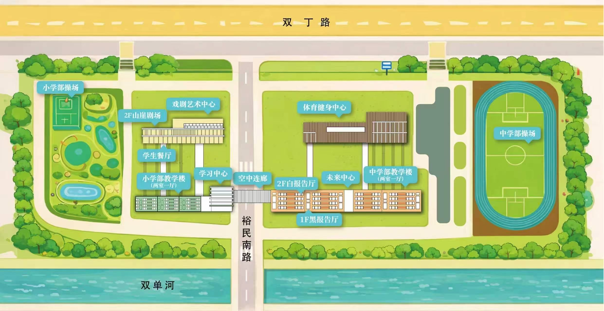

7.19
会前活动
围绕全球人工智能教育治理、国际合作、平台建设与中国方案展开对话，推动学习科学共同体建设。
本届大会纳入“中国实践·全球共创：人智共生视域下的教育实践创新”国际研讨会系列活动
2026 年 7 月 20 日—21 日
7 月 19 日将举行国际人工智能教育论坛与中国教育技术协会学习科学专业委员会（筹）筹备大会
上海市实验学校嘉定新城分校
地址：上海市嘉定区裕民南路 505 号
停车入口：嘉定区双丁路 391 号
聚焦中小学人工智能课程建设、科技教育创新、区域推进机制与未来课堂形态， 展示基础教育一线实践成果，推动人工智能教育高质量发展。
主论坛、平行论坛、工作坊与闭门会议
围绕全球人工智能教育治理、国际合作、平台建设与中国方案展开对话，推动学习科学共同体建设。
开幕致辞、学术前沿主旨报告、国际对话、湾区探索·国际观察·上海实践、国际人工智能 + 科技教育联盟发布仪式。
中小学人工智能课程建设、高校智慧课程建设、教师数智素养跃升、数智教育融合创新实践四大方向同步展开。
面向基础教育与高等教育，围绕人工智能教育课程建设、教学实践创新、技术应用与场景落地展开实操与交流。
7 月 20 日上午 · 小学部 · 山崖剧场
7 月 20 日下午 · 四大专题同步展开
聚焦基础教育，分享人工智能与科技教育新探索。围绕中小学 AI 课程建设、科技教育创新、区域推进机制与未来课堂形态，展示一线实践案例。
聚焦 AI 背景下的通识教育变革、智慧课程建设、教学创新与教师专业发展，探讨人工智能技术在高等教育领域的应用与前景。
聚焦人工智能时代教师数智素养提升，探讨教师 AI 素养构成、循证教研及未来教师培养等前沿议题。
聚焦人工智能与教育教学的深度融合，围绕数智时代教育变革、AI 赋能教学范式重构、产教协同育人等核心议题展开探讨。
7 月 21 日全天 · 36 场实践工作坊
7 月 21 日设置 36 场专题工作坊，面向基础教育与高等教育两个领域， 围绕人工智能教育课程建设、教学实践创新、技术应用与场景落地展开实操与交流。
工作坊具体场次、地点与主讲人信息将在会前通过 RCISS Lab 官方公众号发布。
定向邀请与开放交流相结合
上海市实验学校嘉定新城分校
上海市嘉定区裕民南路 505 号
嘉定区双丁路 391 号
详细会场地图、报到入口与各会场位置将在会前两周通过 RCISS Lab 官方公众号发布，敬请关注。
上海市实验学校嘉定新城分校平面示意图

本次会议不收取会务费，名额有限，建议尽早报名
会议费用：不收取会务费，参会人员无需支付注册、资料等相关费用；食宿和交通费自理。
报名方式：本次会议需提前报名，请关注 RCISS Lab 官方公众号发布的报名二维码与协议酒店信息。
信息发布：会议具体日程、已确认嘉宾名单、工作坊详细方案、会场导航等将在会前两周发布。
第三届大会组织单位